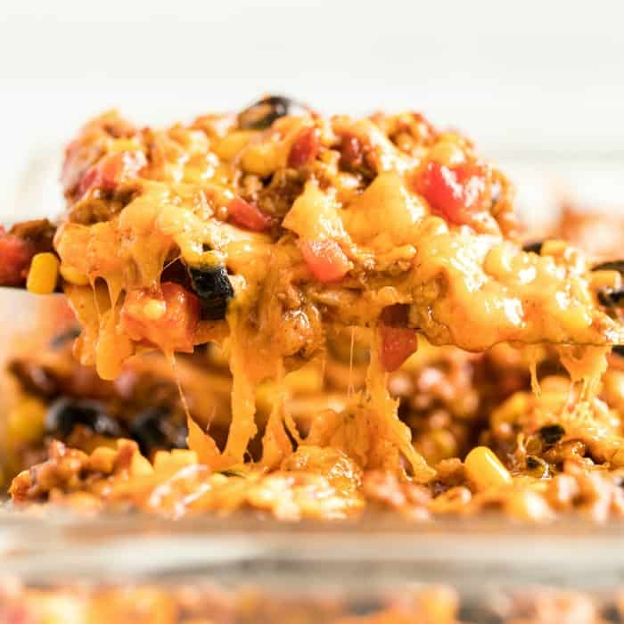

Taco Bake Casserole

Taco Bell Casserole is a main dish of South American origin.
I'ts a main dish.
The main ingredients of Taco Bake Casserole:
- Geound beef
- Chopped onion
- Package taco seasoning mix
- Can of Rotel
- Can of sliced black olives
How to make Taco Bake Casserole:
- Brown ground beef until no longer pink and onions until tender.
- Stir a package of taco seasoning mix (or try our Homemade Taco Seasoning) along with the amount of water indicated on the package directions. Cook for 8-10 minutes.
- Add in the Rotel, olives, and corn. Mix in with the beef mixture and let simmer for about 3 minutes.
- Spray the bottom of a 9×13 dish with nonstick spray (I like to use a glass pan for this recipe.)
- Place tortillas on the bottom of the dish. Spread half of the meat mixture evenly over the tortillas.
- Sprinkle one cup of cheese over the meat layer. Then add another layer of tortillas, the rest of the meat on top of the tortillas, and the last cup of cheese on top of the meat.
- Bake at 350 degrees until cheese is melted and bubbly, about 20 minutes.